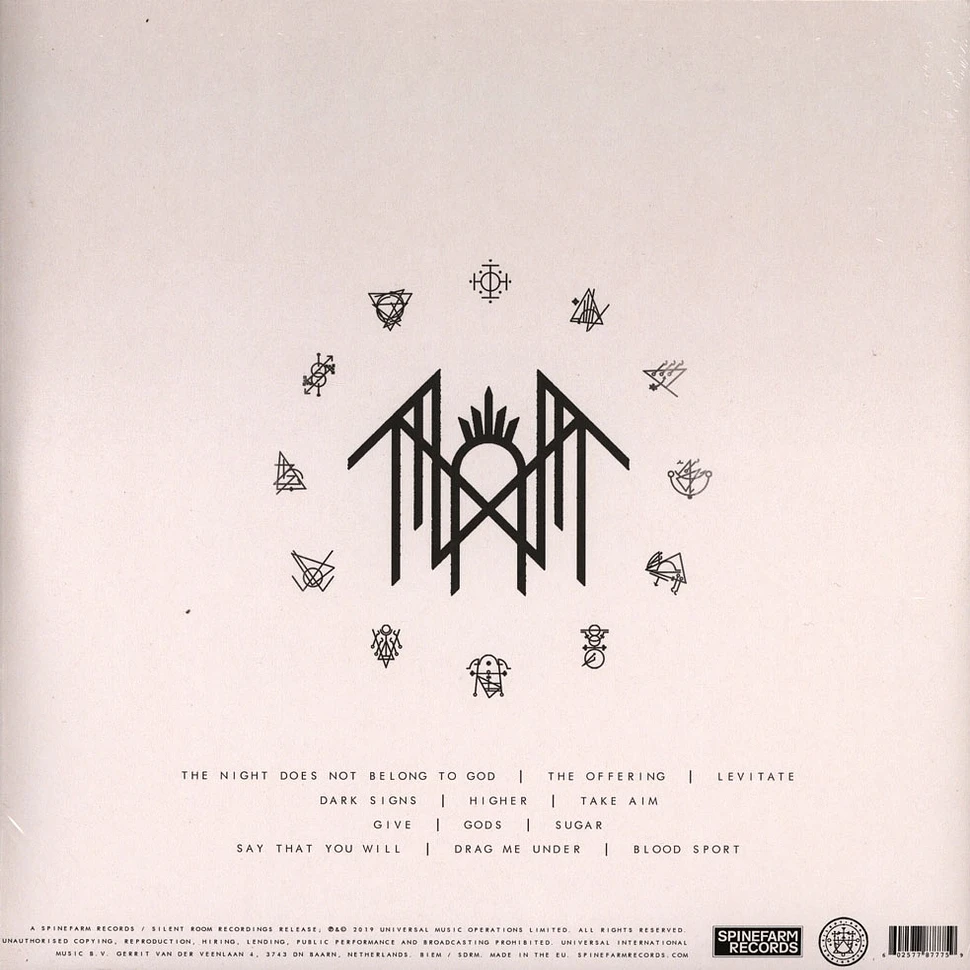

Sundowning (2019) é o álbum de estreia enigmático do Sleep Token, marcando o início da trilogia que explora a devoção tóxica de Vessel à divindade "Sleep". Misturando metal progressivo, pop e R&B, o álbum apresenta uma sonoridade intimista e sombria, destacando-se por letras de codependência, piano melancólico e uso intenso de sintetizadores, como em "Blood Sport" e "Dark Signs".
